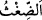
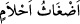
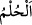
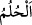
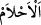
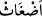
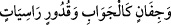
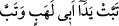

“ yaşı kuru karışık bir tutam ot demektir. “ ise karışık olduğu için
tâbir edilmeye uygun olmayan rüyâ demektir. Nitekim el-Kâmûs’ta böyle der.
“ ve “ rüyâ demektir. “ bâtıl olsun hak olsun rüyâlar anlamındadır.
Bâtıl olduklarını ifâde etmek için “ (saçma sapan)” kelimesi ona izâfe edilmiştir.
“er-Rü’yâ” kelimesinin hak, “el-hulm” kelimesinin ise bâtıl rüyalar için kullanıldığı da
olur. Nitekim şu hadiste bu durum söz konusudur: “Rüya Allah’tan, hulm (sıkıntılı rüya)
ise şeytandandır.”[140]
Burada Allah Teâlâ tarafından onların önceki sözleri bırakılıp başka sözlerinin
aktarılmasına geçilmektedir. Yâni onlar, Hz. Peygamber (a.s.) hakkında “Bu
(Muhammed), sizin gibi bir beşer olmaktan başka nedir ki!” ve O’nun elinde zâhir
olan Kur’an-ı Kerîm hakkında “O sihirdir” demekle yetinmediler, bilakis şunları da
söylediler: “Karmakarışık rüyalardır.” Yâni O’nun gördüğü yalancı karışık rüyalardır.
“Bilakis onu kendisi” kendi nefsinden “uydurmuştur” Bu söylediklerinin aslı veya aslı
olması şüphesi bile yoktur dediler.
Sonra şöyle dediler: “belki de o, şâirdir.” Onun getirdikleri, dinleyene hakîkati
olmayan bazı mânâları hayal ettiren bir şiirdir.
İşte delil ile yenilmiş bâtıl üzere bulunan kimsenin durumu budur. Şaşkın bir halde
bâtıl ile daha bâtıl arasında gidip gelir, bocalar durur. Gördüğün gibi onların ilk sözleri
Allah Teâlâ tarafından terk edilmiştir. İkincisi ve üçüncüsü ise kendileri tarafından terk
edilip bırakılmıştır.
Denilmiştir ki: Şâire ‘şâir’ isminin verilmesi, zekâsı ve bilgisinin inceliği
sebebiyledir. Şiir aslında ince bilgi demektir. Daha sonra örfte vezinli kafiyeli söz için
isim olmuştur. Şâir de sanatında bu özelliği ile temayüz eden kişidir.
Allah Teâlâ’nın inkârcılardan naklen buyurduğu “belki de o, şâirdir.” sözünü
müfessirlerin çoğu, onların Hz. Peygamber (s.a.)’in manzum ve kafiyeli bir şiir getirdiği
suçlamasında bulunmalarına haml etmişlerdir. Hatta kâfirler, “(Sebe’, 34/13)” ve “ (el-Mesed, 111/1)” âyetlerinde olduğu gibi
Kur’an’daki vezinle söylenmişe benzeyen her lafzı şiir olarak yorumladılar.
Muhakkiklerden birisi şöyle demiştir: “İnkârcılar Hz. Peygamber (a.s.)’a attıkları bu
iftirâ ile bu gâyeyi gütmemişlerdir. Çünkü Kur’an’ın şiir üslubları üzere olmadığı
âşikardır. Bunun böyle olduğunu, belâğat sahibi Araplar bir yana konuşmaktan aciz
yabancılar (Acem) bile bilir. Onların Hz. Peygamber (s.a.)’e “şâir” diye iftirâda
bulunmalarından maksadları, onu yalancılıkla itham etmektir. Çünkü şiir, bir nevi yalan,
şâir de yalancı sayılır. Hatta sahte delillere “şiir” denir. Şiir yalanın karargâhı olduğu
için ‘Şiirin en güzeli en yalan olanıdır.’ denilmiştir. Hikmet ehlinden birisi şöyle
demiştir: “Şiiri beğenilen doğru sözlü dindar bir şâir görülmemiştir.”
Söylediği sözler baştan başa Yunan hikmeti de olsa
Kıyâmet günü şiir kimsenin feryadına yetişmez